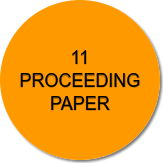
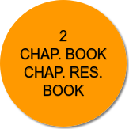

PUBLICATION
 
JOURNAL ARTICLE
(1) Author(s) (Year) (2) Volume, Issue, Page Number
| Title : The Challenges In Implementation Of Ethics In Organization
(1) Syuhaidah Abdul Rahman , Profesor Madya Dr Norhayati Binti Hussin, Jannatul Iza Binti Ahmad Kamal, Norsaniah Bt Md Noh, Siti Nurul Maryam Binti Abdullah, Zahari Bin Mohd Amin, ( 2020) (2) 10, 12, 133 |
| Title : The Effectiveness Electronic Journal By Research Scholars
(1) Profesor Madya Dr Zaharudin B Ibrahim, Sham Sul Kamal Bin Wan Fakeh, Wan Abdul Malek Bin Wan Abdullah, Siti Nurul Maryam Binti Abdullah, Nor Zaina Zaharah Binti Mohamad Ariff, A'dillah Binti Mustafa, Ahmad Soufiean Bin Othman, Mohd Ridzuan Bin Ibrahim, Juwahir Bin Ali, Abu Bakar Bin Suleiman, Ahmad Azman Bin Mohamad Ramli, ( 2015) (2) 2, 5, 51-55 |
| Title : Reinforcing Information Literacydevelopment Through A Subject-focusedresource-based Project
(1) Dr. Halida Binti Yu, Dr. Ezza Rafedziawati Bt Kamal Rafedzi, Siti Nurul Maryam Binti Abdullah, ( 2016) (2) 48, 4, 1 |
| Title : Examining Cognitive Absorption Process On Mobile Information Visualization A Conceptual Framework
(1) Dr. Nora'ayu Binti Ahmad Uzir, Dr. Irni Eliana Binti Khairuddin, Norzuraiza Rina Binti Ahmad, Dr. Mazlina Pati Khan, Siti Nurul Maryam Binti Abdullah, ( 2015) (2) 4, 2, 0 |
PROCEEDING PAPER
(1) Author(s) (Year) (2) Volume, Issue, Page Number
| Title : Exploring Mobile Visualization For Diabetic Self-care Management: A Conceptual Framework
(1) Dr. Nora'ayu Binti Ahmad Uzir, Dr. Irni Eliana Binti Khairuddin, Norzuraiza Rina Binti Ahmad, Dr. Mazlina Pati Khan, Siti Nurul Maryam Binti Abdullah, (2015) (2) N/A, N/A, N/A |
| Title : Computer And Internet Usage Competency Of The Nontechnical Computer-based Distance Learners In Technical Courses
(1) Norzuraiza Rina Binti Ahmad, Profesor Madya Ts. Dr. Siti Arpah Noordin, Dr. Mazlina Pati Khan, Siti Nurul Maryam Binti Abdullah, Fadhilnor Bin Rahmad, Dr. Irni Eliana Binti Khairuddin, Nor Zaina Zaharah Binti Mohamad Ariff, Dr. Nora'ayu Binti Ahmad Uzir, (2014) (2) N/A, N/A, N/A |
| Title : A Case Study Of First-time Mothers With Visual Impairments' Information Behavior: A Work In Progress
(1) Siti Nurul Maryam Binti Abdullah, Pm Dr Kiran Kaur A/p Gurmit Sigh, (2017) (2) N/A, N/A, N/A |
| Title : Medical Records For Forensic: A New Approach For Medical Records Officer Readiness
(1) Dr. Mazlina Pati Khan, Profesor Madya Dr Azman Bin Mat Isa, Nik Azliza Nik Ariffin, Nik Ariffin Nik Azliza, Dr. Nora'ayu Binti Ahmad Uzir, Siti Nurul Maryam Binti Abdullah, Norzuraiza Rina Binti Ahmad, Dr. Irni Eliana Binti Khairuddin, (2015) (2) N/A, N/A, N/A |
| Title : Modeling Of Mobile Visualization For Diabetic Self-care Management
(1) Dr. Nora'ayu Binti Ahmad Uzir, Dr. Irni Eliana Binti Khairuddin, Norzuraiza Rina Binti Ahmad, Siti Nurul Maryam Binti Abdullah, Dr. Mazlina Pati Khan, (2015) (2) N/A, N/A, N/A |
| Title : A Conceptual Framework On Promotional Activity Practices In Malaysian Education Resource Centre
(1) Siti Nurul Maryam Binti Abdullah, Dr. Mazlina Pati Khan, Norzuraiza Rina Binti Ahmad, Dr. Irni Eliana Binti Khairuddin, Dr. Nora'ayu Binti Ahmad Uzir, (2014) (2) N/A, N/A, N/A |
| Title : A Conceptual Framework On Establishment Of Enterprising Infopreneurship: Modeling The Entrepreneurial Competency For Information Professionals
(1) Dr. Irni Eliana Binti Khairuddin, Dr. Nora'ayu Binti Ahmad Uzir, Dr. Mazlina Pati Khan, Siti Nurul Maryam Binti Abdullah, Norzuraiza Rina Binti Ahmad, (2014) (2) N/A, N/A, N/A |
| Title : A Conceptual Framework On Preservation Management : Modeling The Sustainable Development For Preserving Archival Heritage
(1) Dr. Mazlina Pati Khan, Siti Nurul Maryam Binti Abdullah, Norzuraiza Rina Binti Ahmad, Dr. Irni Eliana Binti Khairuddin, Dr. Nora'ayu Binti Ahmad Uzir, (2014) (2) N/A, N/A, N/A |
| Title : A New Catalyst Of Information Sources: Audiovisual Archives As A National Heritage
(1) Dr. Mazlina Pati Khan, Nm Nordin, Norzuraiza Rina Binti Ahmad, Siti Nurul Maryam Binti Abdullah, Dr. Irni Eliana Binti Khairuddin, Dr. Nora'ayu Binti Ahmad Uzir, (2014) (2) N/A, N/A, N/A |
| Title : Determinants Of Intent Among Computer-based Distance Learners In Choosing Technical Courses: A Malaysian Context
(1) Norzuraiza Rina Binti Ahmad, Profesor Madya Ts. Dr. Siti Arpah Noordin, Dr. Mazlina Pati Khan, Siti Nurul Maryam Binti Abdullah, Mohd Yusof Bin Mustaffar, (2013) (2) N/A, N/A, N/A |
| Title : Era Baru Kepentingan Sumber Maklumat: Arkib Audiovisual Sumber Nilai Warisan Negara
(1) Dr. Mazlina Pati Khan, Nm Nordin, Norzuraiza Rina Binti Ahmad, Siti Nurul Maryam Binti Abdullah, Dr. Hanis Diyana Binti Kamarudin, (2013) (2) N/A, N/A, N/A |
RESEARCH BOOK & BOOK
(1) Author(s) (Year)
| Title : Pengurusan Maklumat Dalam Pendidikan: Menangani Cabaran Keperluan Maklumat
(1) Dr. Saiful Farik Mat Yatin, Dr. Shamila Binti Mohamed Shuhidan, Siti Nurul Maryam Binti Abdullah, Shaharom Bin Sulaiman, Abd. Rahim Bin Abd. Rahman, Dr. Haslinda Husaini, Sobariah Bt Awang Mukhtar (hajah), Dang Merduwati Binti Hashim, (2013) |
CHAPTER IN BOOK & CHAPTER IN RESEARCH BOOK
(1) Author(s) (Year) (2) Page Number
| Title : Penggunaan Multimedia Dalam Sistem Pengajaran Dan Pembelajaran
(1) Siti Nurul Maryam Binti Abdullah, Dr. Haslinda Husaini, (2012) (2) 48-55 |
| Title : Ict Dan Kreativiti Dalam Pengajaran Dan Pembelajaran
(1) Dr. Haslinda Husaini, Siti Nurul Maryam Binti Abdullah, (2011) (2) 53 |